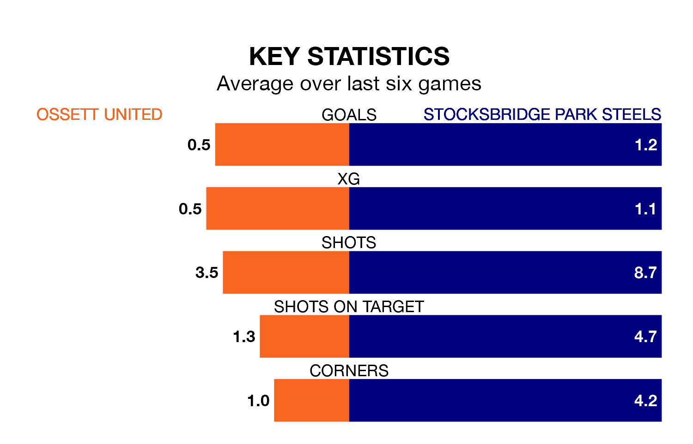

Struggling Ossett United face Stocksbridge Park Steels on Tuesday looking to build on a win in their last league outing.
After securing all three points with a 1-0 victory over Brighouse Town on Saturday, Ossett sit 17th in the Northern Premier League Division One East.
They travel to play a Stocksbridge side 18th in the standings, who were held in their last match, 0-0 against Carlton Town.
Ossett are in bad form in the Northern Premier League Division One East, with one win and five losses from their last six games.
With a win and four draws over that period, Stocksbridge's form is better – they have taken seven points from 18, compared to United's three.
In the last 10 years, Ossett and Stocksbridge have played each other on six occasions. Ossett won four of them, Stocksbridge one, and they drew once.
On average, Ossett scored 1.7 goals and the Steels 0.7 in those matches.
Their last meeting was on October 28, when Ossett won 1-0 away.
With 24 goals in 23 games so far this season, the hosts are the league's second-lowest scorers with 1.0 goals per game. And they are conceding more than average, letting in 46 goals at a rate of 2.0 per game.
The Steels are also below average scorers, with 1.2 goals per game, compared to a league average of 1.6. They have conceded 1.4 goals per game.
Updated: 10:03 (UTC), 30/01/24